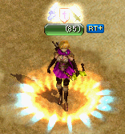
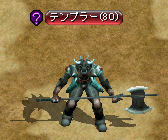

称号による経験値ボーナスの効果
駆け出しの冒険家、復帰者、転生者、RED STONE探偵の経験値ボーナスが、どのように適用されているかを検証。検証方法
Lv85（知恵100未満、無課金）のキャラクターでテンドペンド平原 / ブリッジヘッド北部地域のテンプラーLv80を倒し、本人やパーティーメンバーの称号の有無によって経験値がどのように変化するのかを調べる。
 
称号による経験値ボーナス
| パーティー経験値ボーナス（％） | 個人経験値ボーナス（％） | |
|---|---|---|
| 駆け出しの冒険家 | - | Lvによる |
| 復帰者 | 10 | 20 |
| 転生者Lv1〜3 | 10 | 10〜20 |
| RED STONE探偵Lv3 | 15 | - |
結果
| 本人 | |||
|---|---|---|---|
| 復帰者なし | 復帰者あり | ||
| パ | テ ィ | メ ン バ | |
なし（ソロ） | 冒険家なし 9271 = S 冒険家あり 17263 = B |
冒険家なし 20715 = B×（100+20）％ 冒険家あり 20715 = B×（100+20）％ |
| 黒落ち | 9271 = S | 11125 = S×（100+20）％ | |
| 称号なし | 6977 = P | 9209 = P×（100+10）％×（100+20）％ | |
| 復帰者 | 7675 = P×（100+10）％ | 9209 = P×（100+10）％×（100+20）％ | |
| 転生者Lv3 | 7675 = P×（100+10）％ | 10046 = P×（100+10+10）％×（100+20）％ | |
| 転生者Lv3 +探偵Lv3 |
8564 = P×（100+10+約12.74）％ | 10276 = P×（100+10+約12.74）％×（100+20）％ | |
パーティーメンバーのLvは本人+50以上。（パーティー時、冒険家の効果は適用されない。）
ソロ時、本人が称号なしの場合の経験値9271をSとする。
ソロ時、本人が冒険家ありの場合の経験値17263をBとする。
パーティー時、パーティーメンバーも本人も称号なしの場合の経験値6977をPとする。
獲得経験値 = 元の経験値S/B/P × （100+パーティー経験値ボーナス）％ × （100+個人経験値ボーナス）％
考察
・ソロ時、冒険家の有無に関わらず復帰者の経験値ボーナスはB×20％
⇒Lv200以下の復帰者には、自動的に冒険家の効果が付加される。
・パーティーメンバーが黒落ち+本人が復帰者の場合の経験値ボーナスは、S×20％
⇒パーティーメンバーが黒落ちの場合は、復帰者のパーティー経験値ボーナスは適用されない。
・パーティーメンバーが称号なし+本人が復帰者の場合の経験値ボーナスは、P×10％×20％
⇒パーティーを組んでいる場合でも、復帰者の個人経験値ボーナスが適用される。
・パーティーメンバーも本人も復帰者の場合の経験値ボーナスは、P×10％×20％
⇒復帰者のパーティー経験値ボーナスは、2人以上が称号を所持していても1つ分しか適用されない。
・パーティーメンバーが転生者Lv3+本人が復帰者の場合の経験値ボーナスは、P×（10+10）％×20％
⇒復帰者と転生者のパーティー経験値ボーナスは、加算される。
・パーティーメンバーが転生者Lv3探偵Lv3+本人が称号なしの場合の経験値ボーナスは、P×（10+約12.74）％
⇒転生者と探偵のパーティー経験値ボーナスは加算されるが、探偵Lv3の効果は15％にならず約12.74％？
・パーティーメンバーが転生者Lv3探偵Lv3+本人が復帰者の場合の経験値ボーナスは、P×（10+約12.74）％×20％
⇒復帰者と探偵のパーティー経験値ボーナスは加算されず、高いほうのみ適用される。
まとめ
◆復帰者本人
ソロ時（パーティーメンバーが黒落ちの場合も含む）、通常ソロ時の20％の個人経験値ボーナス
パーティー時、通常パーティー時の10％のパーティー経験値ボーナス×20％の個人経験値ボーナス
※ただしLv200以下の復帰者には、冒険家の有無に関わらず自動的に冒険家の効果が付加されるため、
ソロ時、通常ソロ時×冒険家の個人経験値ボーナス×復帰者20％の個人経験値ボーナス
◆復帰者とパーティーを組んだメンバー
通常パーティー時の10％のパーティー経験値ボーナス
◆転生者とパーティーを組んだメンバー
通常パーティー時の10％のパーティー経験値ボーナス
パーティー時の経験値
獲得経験値=通常パーティー時の経験値×（100+パーティー経験値ボーナス）％×（100+個人経験値ボーナス）％
パーティー経験値ボーナス=復帰者（10％）または探偵（5〜50％）の最も高いほう+転生者（10％）
個人経験値ボーナス=復帰者（20％）
※Lv1〜599の転生者の個人経験値ボーナス（10〜20％）については、未確認。